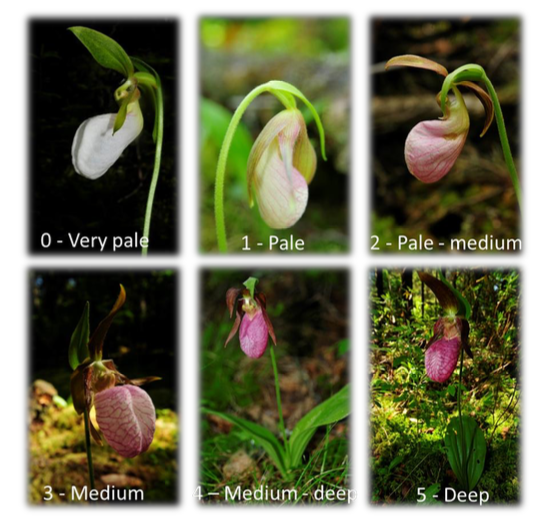
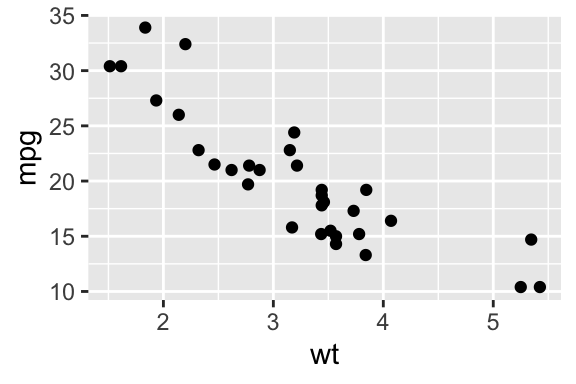
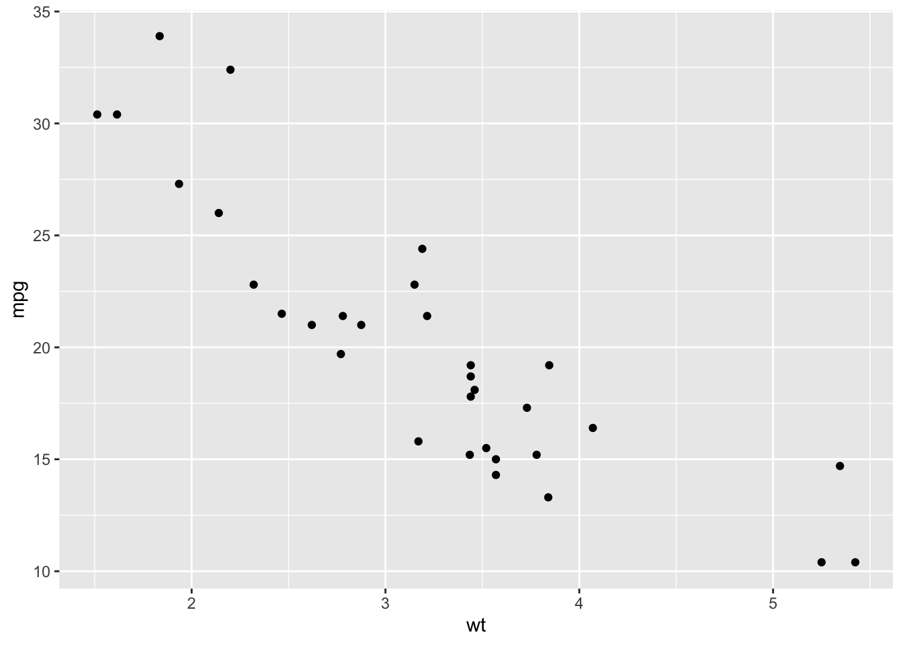

Introducción_RMarkdown
Fecha de la ultima revisión
## [1] "2025-01-29"Introducción a RMarkdown
Responsabilidad del estudiante
EL ESTUDIANTE es COMPLETAMENTE RESPONSABLE de ver estos videos y entender como usar la plataforma.
Mi sugerencias es que deberían ver los vídeos abajo múltiples veces y después compartir con otros estudiantes y hablar de los que entendió y aprendió.
Como Trabajar con un archivo RMarkdown
El siguiente modulo es para una introducción a la plataforma R y RMarkdown.
Vean los siguientes videos en Youtube para aprender los básico de RMarkdown.
Video #2
Vaya al siguiente website y explora la pestaña de Sintaxis Markdown
Aquí un otro video en ingles
Tamaño de la letra
# Ejercicio #1
Ejercicio #1
## Ejercicio #2
Ejercicio #2
### Ejercicio #3
Ejercicio #3
#### Ejercicio #4
Ejercicio #4
##### Ejercicio #5
Ejercicio #5
###### Ejercicio #6
Ejercicio #6
Letra en itálica
*italica*
italica
Letra enegrecida
**bold**
bold
Superscript
supercript^2^
supercript2
Palabra eliminada
~~Eliminada~~
Eliminada
Un enlance a un website
[Google Website](https://www.google.com)
Marca endash
endash: --
endash: –
Marca emdash
emdash: ---
emdash: —
ellipsis
ellipsis: ...
ellipsis: …
Ecuaciones matematica en linea
$y = mx + b$
La ecuación básica de regresión lineal es la siguiente \(y = mx + b\), es solamente un modelo lineal.
Ecuaciones matematica en bloque
$$E = mc^2$$
\[E = mc^2\]
texto en un bloque
> Este texto aparecera en un bloque, como un comentario.
Este texto aparecera en un bloque, como un comentario.
Lista no ordenada
- Item 1
- Item 2
- sub-item 1
- Item 3
- sub-item 1
- sub-item 2
Lista ordenada
- Item 1
- Item 2
- sub-item 1
- Item 3
- sub-item 1
- sub-item 2
Tablas básicas
| Nombre | Edad | Sexo |
|--------|:------:|------:|
| Juan | 23 | Masculina |
| Maria | 25 | Femenino || Nombre | Edad | Sexo |
|---|---|---|
| Juan | 23 | Masculina |
| Maria | 25 | Femenino |
Para añadir una imagen de una pagina web


Para añadir una imagen de su computadora


Opciones de los chunks
Nota que aquí estamos usando otro lenguaje de programación, se llama “knitr” y es un paquete de R. La información se pone en los {r, xxxx}.
- echo = FALSE, TRUE
- eval = FALSE, TRUE
- error = FALSE, TRUE
- message = FALSE, TRUE
- warning = FALSE, TRUE
- include = FALSE, TRUE

Figura como se ve más pequeña, con fig.width=3, fig.height=2

Figura como se ve más pequeña, con out.width=“50%”

La misma grafica pero con fig.align=‘right’ para alinear a la derecha

Gráfica de mpg vs wt
Como añadir el texto alrededor de la gráfica

This is an R Markdown document. Markdown is a simple formatting syntax for authoring HTML, PDF, and MS Word documents. For more details on using R Markdown see http://rmarkdown.rstudio.com.
When you click the Knit button a document will be generated that includes both content as well as the output of any embedded R code chunks within the document. You can embed an R code chunk like this:
Note that the echo = FALSE parameter was added to the
code chunk to prevent printing of the R code that generated the
plot.